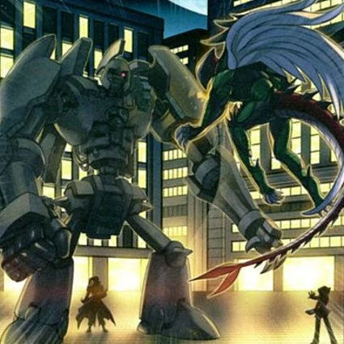

ORIGEN
Los "Mecanismos Antiguo" humanoides tiene una sorprendente similitud con los antiguos soldados griegos, por lo que su creación puede estar vinculada al mecanismo de Antikythera. Fieles a su nombre, todos los monstruos de "Mecanismo Antiguo" se asemejan a robots blindados de diseños variados con sus cuerpos con uniones de ruedas dentadas y engranajes, uniendo varias partes de sus cuerpos juntos. Los fondos de la mayoría de los monstruos del Deck Principal tienen engranajes.
MECANICA
Los Decks de "Mecanismo Antiguo" se enfocan ya sea en la Invocación de Sacrificio o la Invocación de Fusión. La insignia característica de los monstruos "Mecanismo Antiguo" es evitar la activación de Cartas Mágicas/Trampa durante su ataque. Esto permite que los monstruos "Mecanismo Antiguo" ataquen sin miedo de ser detenidos por cualquier Carta Mágica/Trampa. Debido a la prevalencia de efectos de monstruos que pueden activarse durante la Batalla, los monstruos más nuevos también evitan su activación. (Sin embargo, no son inmunes a las Cartas Mágicas/Trampa).
ESTILO DE JUEGO
"Pueblo Mecánico" y "Castillo de Mecanismo Antiguo" facilitan la Invocación de Sacrificios, y este
último aumenta el ATK. "Fortaleza de Mecanismo Antiguo" y "Hidra de Mecanismo Antiguo" proporcionan
un escudo a las cartas "Mecanismo Antiguo", y "Renacimiento del Mecanismo Antiguo" puede revivir
fácilmente a esos monstruos del Cementerio y fortalecerlos ligeramente. "Güiverno de Mecanismo
Antiguo" y "Taller de Mecanismo Antiguo" pueden permitir la recuperación de manos.
Para sus Invocaciones de Fusión, "Sabueso de Caza de Mecanismo Antiguo" es simplemente
"Polimerización". La serie comienza con "Howitzer de Mecanismo Antiguo", que puede infligir daño e
Invocar a más monstruos "Mecanismo Antiguo" mientras ignora sus condiciones de Invocación cuando es
destruido en batalla. "Golem de Megatón de Mecanismo Antiguo" puede permitir múltiples ataques (en
caso de que se usen los monstruos correctos como Materiales de Fusión), y luego puede evolucionar a
"Golem de Mecanismo Antiguo Definitivo" para causar más daño, y finalmente, el único monstruo que no
es de TIERRA, "Gigante Mecanismo Antiguo Caos", para la erradicación total. El Deck fomenta aún más
el uso de "Golem de Mecanismo Antiguo" con su carta de Fusión "Fusión de Mecanismo Antiguo", que
puede sacar casi instantáneamente a cualquiera de los Monstruos de Fusión "Mecanismo Antiguo" si
"Golem" está en el Campo.
DEBILIDADES
Con unas pocas excepciones, los monstruos "Mecanismo Antiguo" no son inmunes a las Cartas Mágicas/de Trampa, así que atacar con un monstruo que no es un "Mecanismo Antiguo" los hará vulnerables a las cartas como "Fuerza de Espejo". Cartas como "Lluvia Ácida", "Mosquito Magnético", y "Caída del Sistema" tienen el potencial para apagar completamente un Deck "Mecanismo Antiguo". Aunque estas cartas pueden ser difíciles de contrarrestar, "Muralla de Hierro Imperial", "Camino de Luz de Estrellas", "La Gran Revolución se Terminó" y otras Cartas Mágicas/de Trampa de negación pueden prevenir sus activaciones. Finalmente, al ser monstruos de Tipo Máquina, pueden ser usados como Materiales de Fusión para el "Dragón Fortaleza Chimeratech" del adversario.
CURIOSIDADES
-
"Mecanismo Antiguo" fue usado por el Dr. Crowler en su Duelo contra Chumley en el episodio 50 del anime Yu-Gi-Oh! GX.
-
"Mecanismo Antiguo", junto a "Mago Oscuro" y "Buster Blader" son las únicas cartas cuyos nombres son los mismos que los de su arquetipo.
-
Mientras que la mayoría de los monstruos "Mecanismo Antiguo" tienden a parecerse a alguna variante de un guerrero griego o una bestia de guerra, "Mecanismo Antiguo" casi no tiene características humanoides en absoluto, aparte de sus manos rudimentarias, los brazos y una forma que recuerda vagamente a un torso humano. Esto, junto con su capacidad de ser Invocado de Modo Especial si hay otros monstruos "Mecanismo Antiguo" en el Campo, implica que sea algún tipo de "Mecanismo Antiguo" prototipo o una construcción hecha con los restos que quedaron de su creación. Se trata esencialmente de partes vivientes adicionales, de acuerdo con su bajo ATK.
-
El diseño de la "Ficha Mecanismo Antiguo" es la misma que la de "Mecanismo Antiguo", aunque sin brazos ni ruedas.
-
Dos copias de "Mecanismo Antiguo" aparecen en la ilustración de la carta exclusiva del anime "Inspección de Mecanismo Antiguo".
-
"Golem de Mecanismo Antiguo" es la Carta de Portada del Sobre de Expansión El Milenio Perdido.
-
"Golem de Mecanismo Antiguo" tiene una cresta en su casco, haciendo referencia al diseño de los cascos usados por los antiguos militares romanos. Durante el Imperio Romano se construyeron grandes máquinas de guerra que eran impulsadas por mecanismos.
-
"Golem de Mecanismo Antiguo" es uno de los cuatro monstruos "Mecanismo Antiguo" originales (junto con "Soldado de Mecanismo Antiguo", "Bestia de Mecanismo Antiguo" e "Ingeniero de Mecanismo Antiguo") que tienen la misma cantidad de ATK y DEF.
-
Como su nombre indica, "Golem de Mecanismo Antiguo" se asemeja a un golem, un guardián animado hecho a partir de materiales de barro.
-
"Golem de Mecanismo Antiguo" tiene un gran parecido con el robot gigante alienígena de la película El Gigante de Hierro.
-
"Golem de Mecanismo Antiguo Definitivo" es el segundo monstruo "Mecanismo Antiguo" más fuerte, solo siendo superado por "Gigante Mecanismo Antiguo Caos".
-
"Golem de Mecanismo Antiguo Definitivo" es el único monstruo con 4400 ATK original impreso.
-
"Golem de Mecanismo Antiguo Definitivo" podría ser el resultado de la fusión entre "Golem de Mecanismo Antiguo" con "Bestia de Mecanismo Antiguo" (por su sistema de cuatro patas) y con "Ingeniero de Mecanismo Antiguo" (por la tenaza de su mano izquierda).
-
"Golem de Mecanismo Antiguo Definitivo" es el segundo monstruo "Mecanismo Antiguo" más fuerte, solo siendo superado por "Gigante Mecanismo Antiguo Caos".
-
"Golem de Mecanismo Antiguo Definitivo" tiene el ATK más alto de los Monstruos de Fusión de Tipo Máquina en el OCG/TCG, y es el segundo monstruo más fuerte que puede ser Invocado con "Vínculo de Poder" (su ATK llegaría a los 8800). El primero seria "Gigante Mecanismo Antiguo Caos" (su ATK llegaría a 9000).
-
"Golem de Mecanismo Antiguo Definitivo" tiene el ATK más alto de los monstruos que tienen el efecto de daño de penetración.
-
La apariencia de "Golem de Mecanismo Antiguo Definitivo" puede estar basada en la del Caballo de Troya de la mitología griega. Además, como "Golem de Mecanismo Antiguo", lleva lo que parece ser un casco romano en su cabeza.
-
"Golem de Mecanismo Antiguo Definitivo" puede ser visto como el homólogo "Mecanismo Antiguo" de "Dragón de Ojos Azules Definitivo" y de "Dragón Ciber Final"
-
Una versión incompleta de "Golem de Mecanismo Antiguo Definitivo" aparece en la ilustración de la carta del anime "Mecanismo Antiguo Inacabado".
-
"Golem de Megatón de Mecanismo Antiguo" es una versión mejorada del monstruo "Golem de Mecanismo Antiguo Definitivo"
-
La ilustración de "Duelo Interdimensional" muestra a los monstruos "Golem de Mecanismo Antiguo" y "HÉROE Elemental de la Llama Wingman" dentro de "Rascacielos". También se pueden apreciar las siluetas de Jaden Yuki y el Dr. Crowler.
-
"Duelo Interdimensional" rinde homenaje al primer episodio y/o al episodio 167 del anime de Yu-Gi-Oh! GX, cuando el "HÉROE Elemental de la Llama Wingman" de Jaden luchó contra el "Golem de Mecanismo Antiguo" del Dr. Crowler mientras "Rascacielos" estaba en el Campo.
-
"Golem de Mecanismo Antiguo - Golpe Definitivo" está basado en el nombre del ataque del monstruo "Golem de Mecanismo Antiguo".
-
"Golem de Mecanismo Antiguo - Golpe Definitivo" fue un homenaje al episodio 167 del anime Yu-Gi-Oh! GX, el cual ganó en una encuesta realizada por la revista V Jump, donde los fans eligieron el segundo Duelo de Jaden Yuki contra el Dr. Crowler como el mejor Duelo en GX.
-
"Marco de Mecanismo Antiguo" parece ser el endoesqueleto del monstruo "Golem de Mecanismo Antiguo".
-
El nombre de esta carta parece ser fruto de una traducción incorrecta, donde "frame" debería haber sido traducido como "armazón".
-
"Ballista Mecanismo Antiguo" está basado en una ballesta de repetición, un arma de origen chino de carga semiautomática que permitía disparar múltiples flechas en pocos segundos
